Galería de Fotos
Un breve recorrido en imágenes de los momentos más importantes en mi carrera
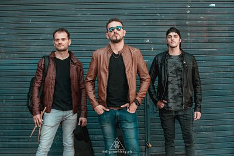
Junto a Patricio Sozzi Quadrini, baterista y Lucas Migoya, guitarrista, haciendo fotos para mi albúm Solista CDG Project.
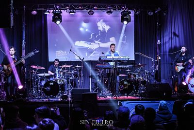
Gospel Drums Festival! Invitado para ser parte de la grabación del DVD en vivo.
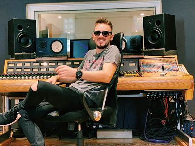
Grabando el videoclip del primer corte de CDG Project.
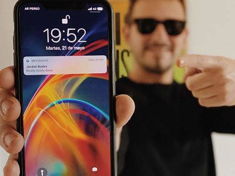
El día de Jordan Ruddes me mandó un mensaje.
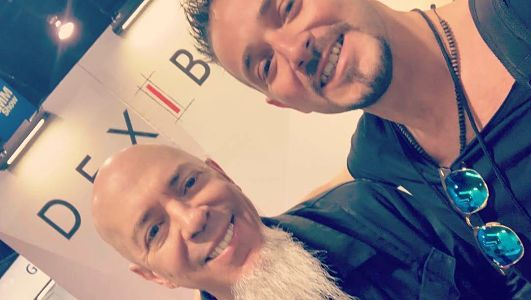
El día que conocí a Jordan Ruddes en Namm.
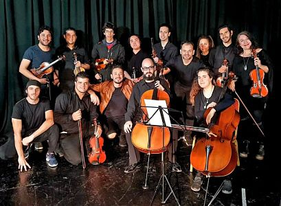
Junto a la orquesta sinfónica que nos acompañó en la grabación del segundo video clip de CDG Project.
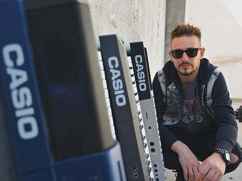
Producción de fotos para Casio.
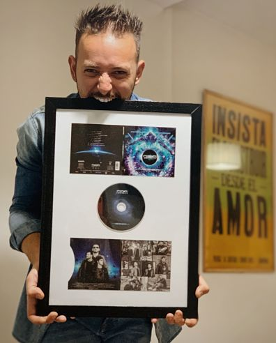
Mi disco solista elegido como el mejor álbum debut del mundo en el 2019.
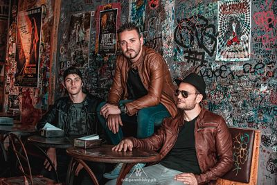
Sesión de fotos previo al lanzamiento de CDG Project.
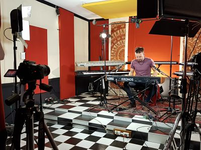
Grabación del The Secret Key 2.
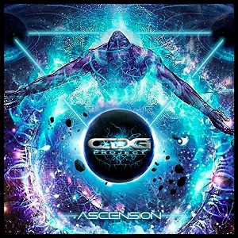
Tapa de mi álbum solista, después de meses y meses de esfuerzo!
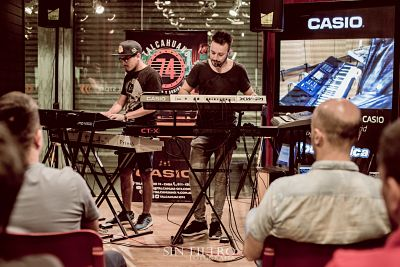
Masterclass en Buenos Aires.